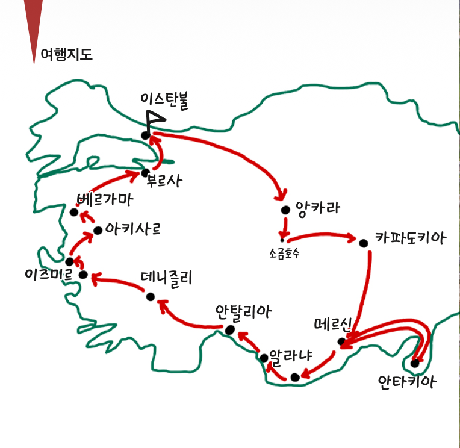
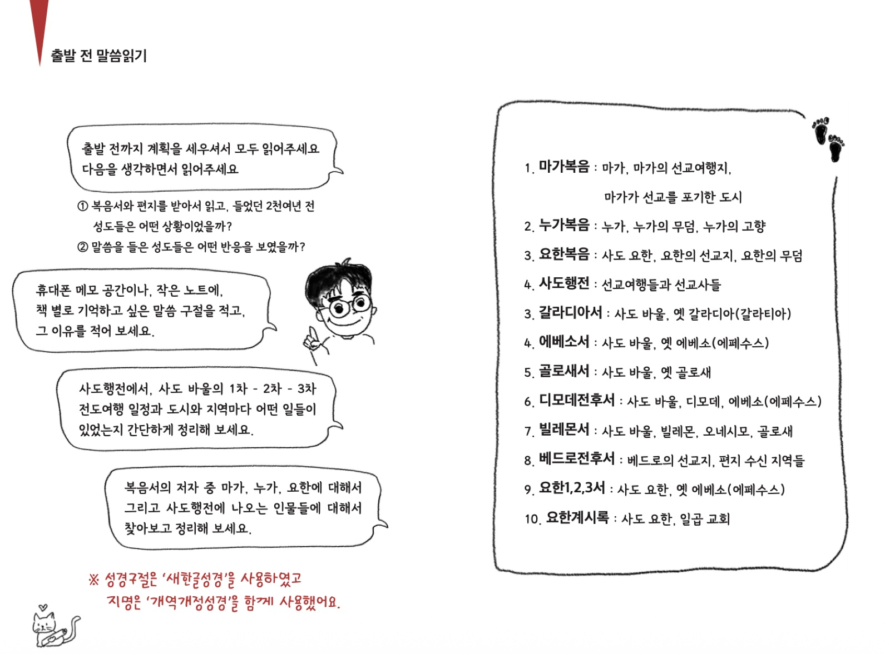
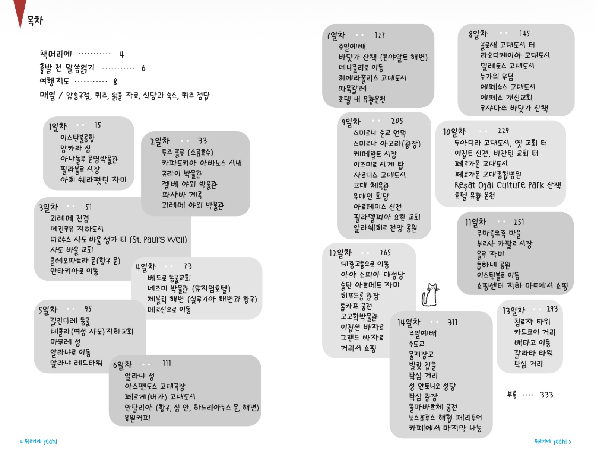
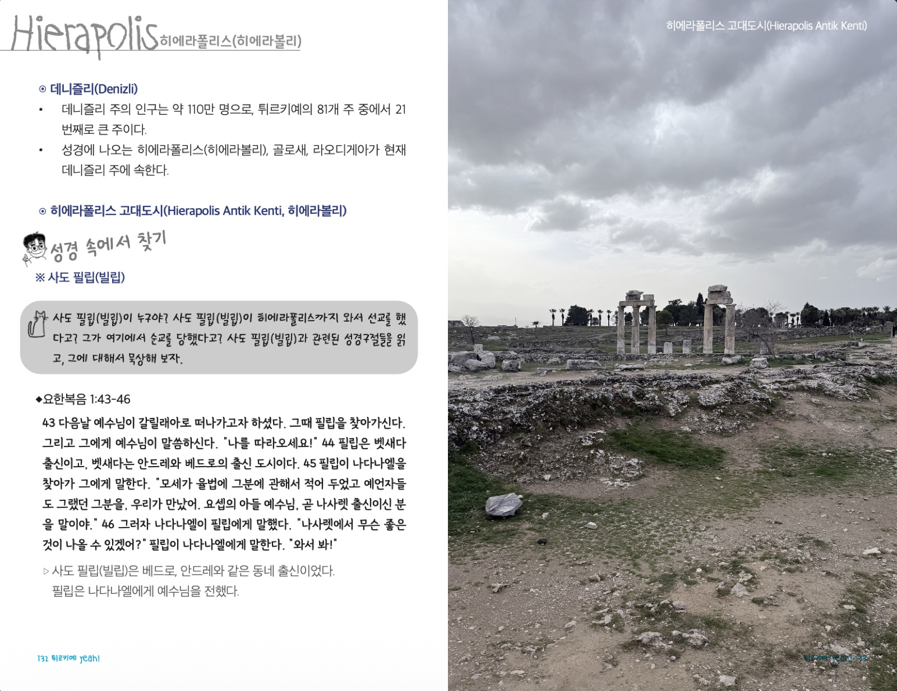
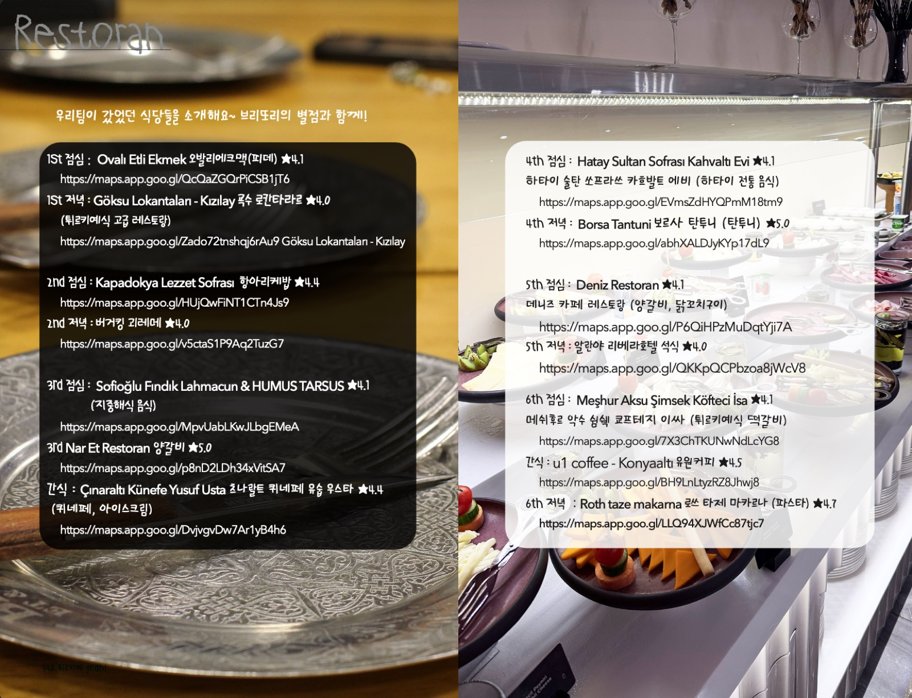

튀르키예 여행 왜 갈까요?
튀르키예는 한국인이 선호하는 여행지입니다. 오래된 고대 도시들이 즐비하고 아름다운 자연을 품고 있으며, 입맛에 잘 맞는 풍부한 먹거리가 어느 도시에나 넘쳐나기 때문입니다.
그러나 특별히 기독교인들이 튀르키예를 찾는 이유는 신약성경과 초대교회의 무대를 여행할 수 있기 때문입니다.


튀르키예는 한국인이 선호하는 여행지입니다. 오래된 고대 도시들이 즐비하고 아름다운 자연을 품고 있으며, 입맛에 잘 맞는 풍부한 먹거리가 어느 도시에나 넘쳐나기 때문입니다.
그러나 특별히 기독교인들이 튀르키예를 찾는 이유는 신약성경과 초대교회의 무대를 여행할 수 있기 때문입니다.

튀르키예는 우리가 성경으로 만난 사람들의 생사를 넘나드는 삶의 이야기를 담고 있습니다. 우리가 방문한 곳들은 예전의 모습을 많이 잃었지만, 그 땅에는 생생하게 살아 있는 그들의 땀과 눈물, 사랑이 여전히 존재하고 있습니다.
위인전 속의 위대한 인물처럼 닿지 않는 곳에 있던 바울, 요한, 베드로, 빌립, 바나바, 마가, 누가, 디모데와 수많은 이들이 그곳 튀르키예에 있었고, 그곳에서 살았고, 그들 중 몇은 그곳에서 생을 마감했습니다. 그들의 삶의 흔적을 따라 여행하는 것은 크리스천들에게 매우 의미 있는 일입니다.
여행 내내 그 의미가 뿌연 안개처럼 손에 잡히지 않았었는데, 마치고 돌아와 다시 읽는 성경에서 그들은 이제 나의 지인이 되어 있었습니다. 그들의 행적은 나의 친구의, 동료의, 선생님의 이야기가 되어 있다는 것을 깨닫게 되었습니다.
이런 경험이 가능했던 이유는 보는 것에만 그치지 않고 읽고 나누는 여행을 했기 때문입니다. 아는 만큼 보이고, 보이는 만큼 경험하게 됩니다. 그런 여행의 경험을 공유하기 위해서 ‘미스터리’와 이 책을 만들었고, 이 책을 통해 우리가 느끼고 나누고 담아 온 감동을 여러분도 함께 누릴 수 있을 것이라고 믿습니다.
14박 15일의 긴 여행의 모든 것을 담았습니다. 그 시작은 여행 전 성경 본문을 읽는 데서부터 출발합니다. 14일 동안의 일정이 날짜별로 구성되어 있습니다.

매일의 일정 속에는 그날 암송할 성경구절과 방문하게 될 도시에 대한 퀴즈, 그곳과 관련된 성경본문, 생각거리, 도시의 정보가 담긴 읽을거리 등이 기록되어 있습니다. 매일 출발 전 순서대로 읽고 출발하면 하루의 여행을 풍성하게 채울 수 있습니다.


책 말미에는 우리가 먹었던 음식들과 방문했던 식당들이 소개되어 있습니다. ‘미스터리’의 고농도 서칭으로 낙점된 식당들로, 무엇을 먹어야 할지 결정하지 못하신 분들께 추천드리고 싶어서 포함하였습니다.

이 책을 엮은 ‘미스터리’는 튀르키예에서 9년간 현지 교회에서 사역하셨던 선교사님입니다. 튀르키예는 무슬림 인구가 많아서 선교사님 혹은 목사님이라는 호칭이 누군가의 귀에 들어가면 불편한 상황을 맞닥뜨리게 될 수 있어 ‘미스터리’라는 이름으로 부르기로 하였답니다.
튀르키예에 계시던 때부터 지금까지 많은 팀들을 가이드하셨고, 올해 1월 저희 팀의 성지순례에 동행하셨습니다. 미스터리는 우리 팀을 위해 그간의 모든 노하우와 정보들을 담아 이 자료를 엮으셨습니다. 잘 가이드하기 위해 마음을 담아 편집하였고, 미스터리는 수십 번을 다시 읽으며 수정했습니다.
튀르키예 성지순례를 가기 위해 준비하는 분들, 이미 성지순례를 다녀온 분들, 여러 가지 이유로 성지순례는 못 가지만 그 감동을 함께 느끼고 싶은 분들은 꼭 이 책을 통해 같은 경험을 나누길 소망합니다.
“86년 동안 나는 그분을 섬겼소. 그분은 나에게 한 번도 잘못하신 적이 없으셨소. 그런데 내가 어떻게 나를 구원하신 나의 왕을 모독할 수 있겠소?”
예수님을 모른다고 부인하지 않았던 스미르나(서머나)의 순교자 폴리카르포스(폴리캅)와 지금의 나는 긴 하나님의 역사 속에 같은 삶을 살아내고 있다는 것을 다시금 일깨워 줄 것이라 믿습니다.